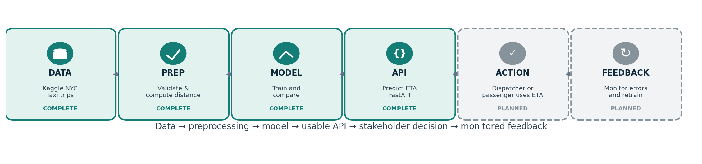
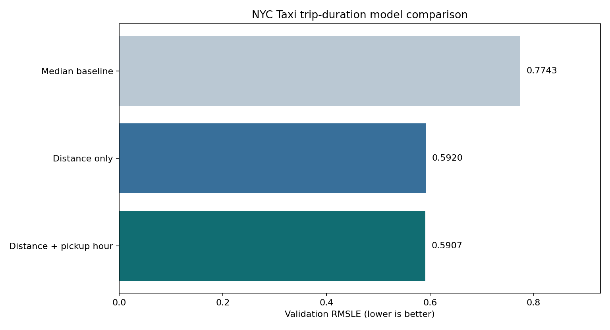
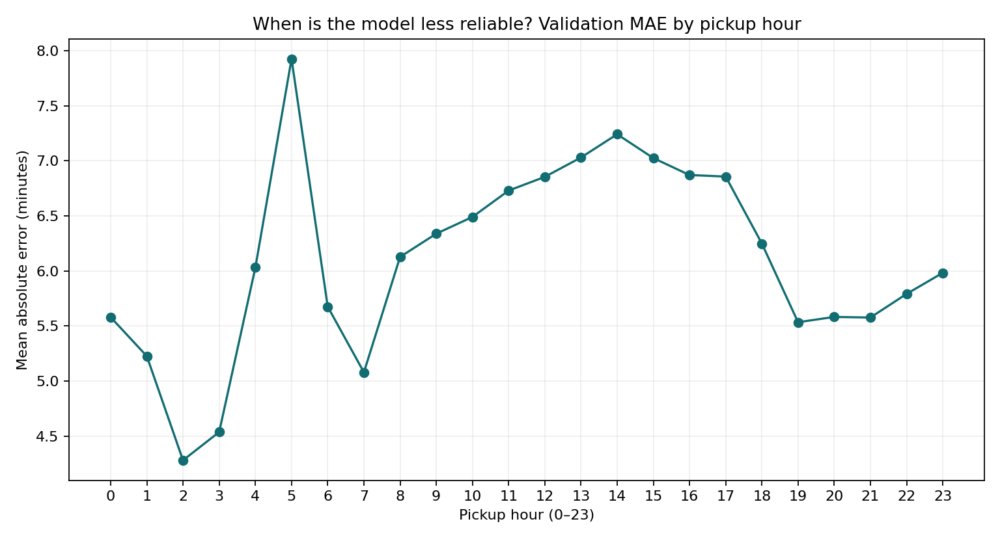
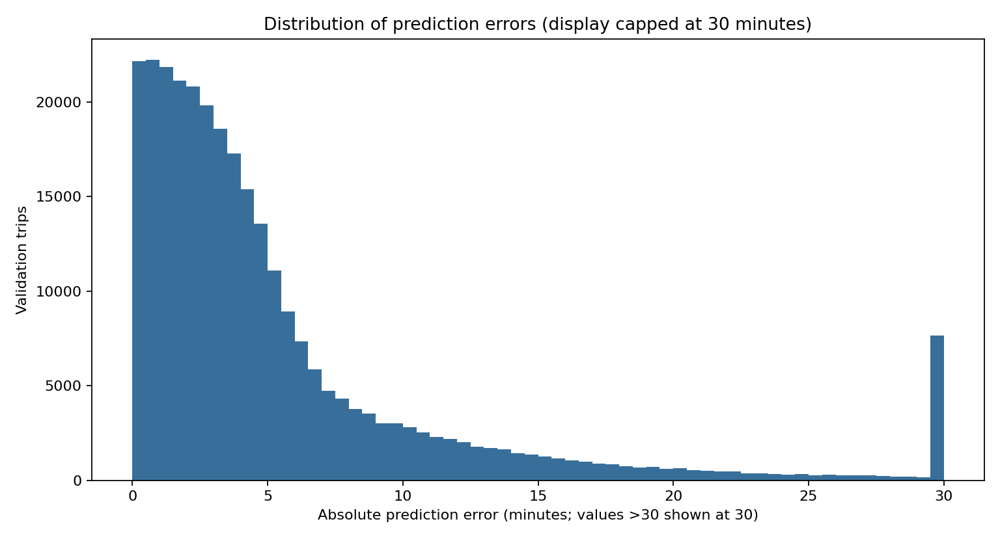

Stakeholder: a hypothetical NYC taxi operations/planning team. Question: Can pre-trip distance and pickup hour support a useful ETA estimate?
Data scope: 1,456,572 modeled trips; 2,072 (0.142%) excluded for travel duration >6 hours or great-circle distance >200 km. Random 80/20 train/validation split, seed 42. Prediction output is capped at 360 minutes.
| Model | Validation RMSLE ↓ | MAE (min) ↓ | Within 3 min ↑ |
|---|---|---|---|
| Median baseline | 0.7743 | 7.422 | 29.43% |
| Distance-only linear regression | 0.5920 | 6.189 | 43.66% |
| Distance + pickup hour regression | 0.5907 | 6.182 | 43.93% |




Run python src/p2_analysis.py from the repository root after downloading the Kaggle data, then run python src/check_saved_model.py. Optional API: uvicorn app:app --reload; visit /docs.
The metrics evaluate a retrospective, filtered 2016 dataset. They do not establish real-time predictive reliability, traffic-adjusted arrival times, or cost savings. The random split can overstate time-forward performance. Destination coordinates are assumed known at prediction time. See the full draft report for limitations and next steps.
Source: Kaggle NYC Taxi Trip Duration competition. AI coding assistance used and verified.